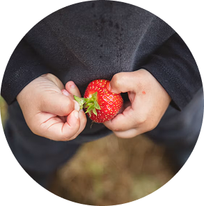
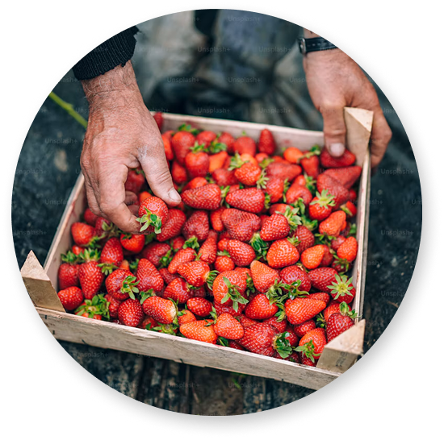
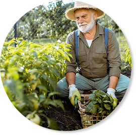
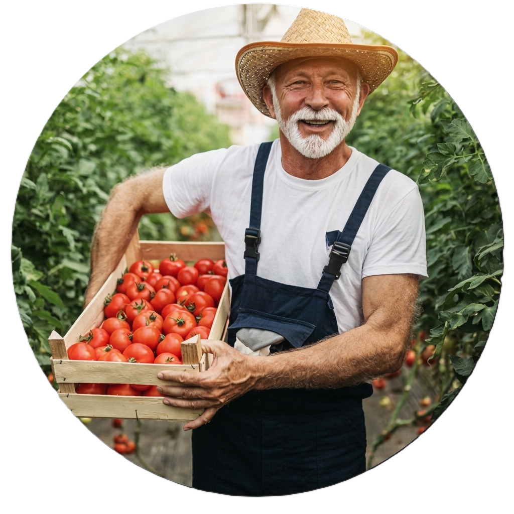

INGENIERÍA Y DESARROLLO
El equipo detrás de
Las familias agricultoras de Putumayo producen cosechas orgánicas de la más alta calidad, pero carecen de visibilidad digital para competir en el mercado moderno. Nuestra meta fue romper este aislamiento, creando una vitrina digital competitiva para posicionar sus marcas y conectarlas con el comercio masivo.




Desarrollamos un e-commerce desacoplado y escalable que funciona como canal de venta directa para restaurantes nacionales y centraliza el primer contacto para exportaciones.
Somos un equipo de desarrollo de software formados en Generation Colombia. Diseñamos, estructuramos y desplegamos soluciones tecnológicas de alto impacto con metodologías ágiles.

descripcion de mi perfil

descripcion de mi perfil

descripcion de mi perfil

descripcion de mi perfil